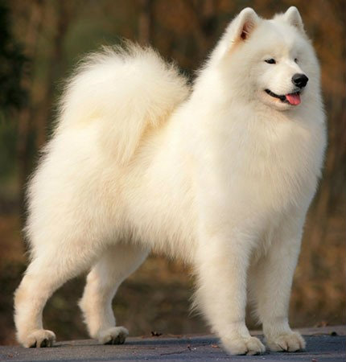
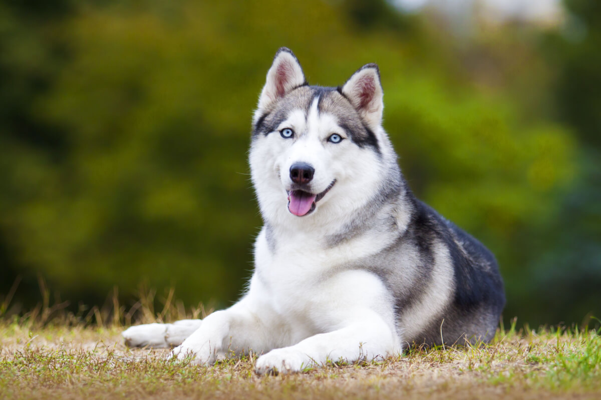

O Samoieda, com sua pelagem branca exuberante e sorriso contagiante, é uma raça de cão que encanta olhares por onde passa. Originário das regiões árticas da Sibéria, na Rússia, esse canino desempenhou um papel fundamental na vida das tribos Samoyed. Utilizado como cão de trenó, pastor de renas e companheiro inseparável, o Samoieda desenvolveu características únicas que o tornaram uma raça especial. Acredita-se que a relação entre os Samoiedas e os humanos remonte a milhares de anos. Os cães foram domesticados e selecionados ao longo das gerações, adquirindo características que os tornaram aptos para sobreviver em um ambiente hostil e auxiliar seus donos em diversas tarefas. Sua pelagem densa e dupla camada, por exemplo, proporcionava isolamento térmico, protegendo-os do frio intenso. O Samoieda é conhecido por sua inteligência, lealdade e disposição para trabalhar. Sua natureza amigável e sociável o torna um excelente companheiro para famílias. Além disso, são cães bastante ativos e necessitam de atividades físicas regulares para se manterem saudáveis e felizes. Em termos de comportamento, os Samoiedas são geralmente alegres e enérgicos. Eles adoram brincar e interagir com seus tutores e com outras pessoas. No entanto, é importante socializá-los desde filhotes para que se tornem cães equilibrados e bem adaptados. A raça Samoieda possui um instinto de trabalho muito forte, herdado de seus ancestrais. Eles gostam de ter tarefas a realizar e podem se tornar entediados se não forem devidamente estimulados. Atividades como caminhadas, brincadeiras de buscar e agility são ótimas opções para gastar a energia desses cães. Apesar de sua aparência delicada, os Samoiedas são cães robustos e resistentes. No entanto, como qualquer outra raça, eles podem ser suscetíveis a algumas doenças, como displasia coxo-femoral e catarata. É importante que os tutores de Samoiedas procurem um veterinário de confiança para acompanhar a saúde de seus cães e oferecer os cuidados necessários.

Originário das gélidas terras da Sibéria, o Husky Siberiano é uma raça que carrega consigo a força e a beleza da natureza selvagem. Desenvolvido pela tribo nômade Chukchi, há milhares de anos, esse cão robusto e ágil era fundamental para a sobrevivência em um ambiente hostil. Inicialmente, os Huskies eram utilizados para caçar e puxar trenós, transportando pessoas e cargas através das vastas extensões nevadas. Sua resistência ao frio extremo e sua capacidade de percorrer longas distâncias, mesmo em condições adversas, os tornaram indispensáveis para as comunidades locais. Acredita-se que a domesticação do Husky tenha ocorrido de forma gradual, com os cães sendo selecionados por suas características mais desejáveis para o trabalho. Com a pelagem dupla espessa e densa, que os isola do frio, os Huskies possuem uma ampla variedade de cores, desde o branco puro até o preto, passando por tons de cinza, vermelho e marrom, muitas vezes com marcas e padrões únicos. Seus olhos, geralmente azuis ou castanhos, podem até mesmo apresentar heterocromia (cores diferentes em cada olho), conferindo-lhes um olhar penetrante e misterioso. A inteligência e a independência são características marcantes da raça. Descendentes de lobos, os Huskies possuem um forte instinto de caça e um desejo inato de explorar. Embora sejam cães leais e afetuosos com seus donos, eles podem ser teimosos e exigentes, necessitando de adestramento firme e consistente desde filhotes. Apesar de sua origem ártica, os Huskies se adaptaram bem a diversos climas, desde que tenham acesso a atividades físicas regulares. Suas necessidades energéticas são altas, e a falta de exercícios pode levar ao tédio e a comportamentos destrutivos. Caminhadas longas, corridas e brincadeiras são essenciais para a saúde física e mental desses cães. A popularidade dos Huskies Siberianos cresceu significativamente nas últimas décadas, tornando-os uma das raças mais procuradas em todo o mundo. No entanto, é importante ressaltar que a posse de um Husky exige responsabilidade e dedicação. Antes de adquirir um filhote, é fundamental pesquisar sobre a raça, conhecer suas necessidades e estar preparado para os desafios que a criação de um cão tão ativo e independente pode trazer.